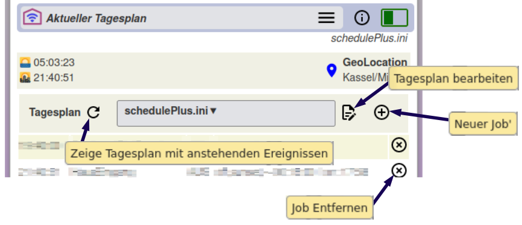
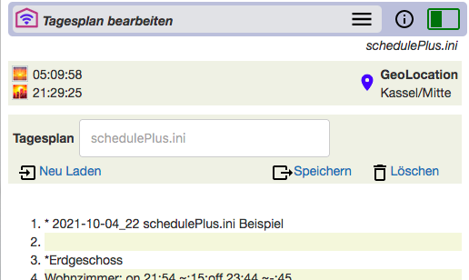
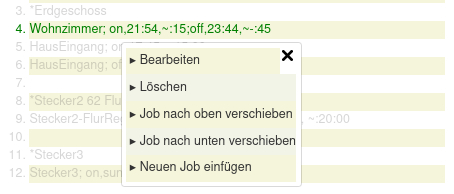
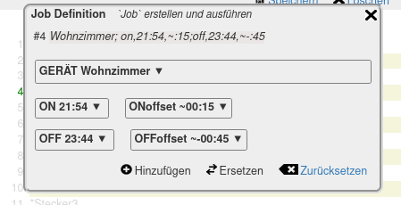
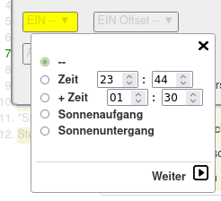
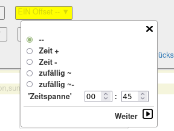
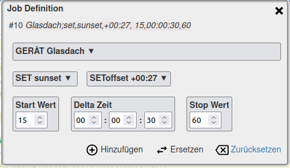
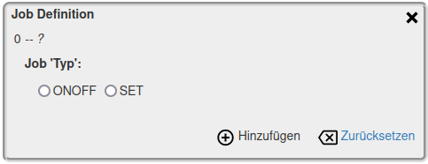

schedule+
schedule+
2022-06-15
Tagesplan und Jobs Bearbeiten
Tagesplan und Jobs erstellen und anpassen
Die Seite 'Aktueller Tagesplan' stellt auch den Zugang zur Erstellung und Anpassung von Tagesplan mit seinen Jobs zur Verfügung.

Das Dialogfeld 'Tagesplan' zeigt den ausgewählten, aktuellen Tagesplan sowie Icons zu deren Bearbeitung:
 Hinzufügen schließt die Eingabe des Jobs ab und er wird berechnet entsprechend der Definitionen. Im 'Aktueller Tagesplan' wird er sichtbar sein, sofern die errechneten Zeiten noch im
weiteren aktuellen Tagesverlauf liegen.
Hinzufügen schließt die Eingabe des Jobs ab und er wird berechnet entsprechend der Definitionen. Im 'Aktueller Tagesplan' wird er sichtbar sein, sofern die errechneten Zeiten noch im
weiteren aktuellen Tagesverlauf liegen.
 Aktualisierung des Tagesplanes, so werden bereits ausgeführte Jobs des Tages aus der Übersicht entfernt
Aktualisierung des Tagesplanes, so werden bereits ausgeführte Jobs des Tages aus der Übersicht entfernt- Das Menüfeld gibt den aktuellen Tagesplan an; es ist auch ein Auswahl Menü zum Laden anderer Tagespläne
 Bearbeitung des gesamten Tagesplanes
Bearbeitung des gesamten Tagesplanes - Hinzufügen eines zusätzlichen Jobs
Hiermit wird der Job dem aktuellen Tagesplan hinzugefügt, aber nicht in der (.ini) Datei gespeichert; generelle Änderungen am Tagesplan erfolgt nur mit dem Aufruf.
Editor -- Bearbeitung eines Tagesplanes
Mit Aufruf des Editors wird der vorher ausgewählte Tagesplan tabellarisch angezeigt:

Hinweis
Ein anderer Tagesplan kann durch Eingabe im Dialogfeld angefordert und mit 'Neu Laden' geöffnet werden. Existiert kein Tagesplan mit dem angegebenen Namen, so wird automatisch ein neuer Plan angelegt.
'Speichern' speichert Änderungen des Tagesplanes unter dem im Dialogfeld angegebenen Namen.
Löscht den angegebenen Tagesplan (.ini Datei).
Ein anderer Tagesplan kann durch Eingabe im Dialogfeld angefordert und mit 'Neu Laden' geöffnet werden. Existiert kein Tagesplan mit dem angegebenen Namen, so wird automatisch ein neuer Plan angelegt.
'Speichern' speichert Änderungen des Tagesplanes unter dem im Dialogfeld angegebenen Namen.
Löscht den angegebenen Tagesplan (.ini Datei).
Job in der Tabelle bearbeiten
Mit Aktivieren einer Tagesplan Tabellenzeile öffnet sich das Auswahlmenü:

Mit 'Bearbeiten' und 'Neuen Job einfügen' erfolgt die Bearbeitung des Jobs, dabei sind etwas unterschiedliche Bearbeitungen für EIN/AUS Schalter und DIMMER notwendig.
Job für Schalter -- EIN/AUS

Das Beispiel stellt einen Schaltvorgang für einen Schalter 'Wohnzimmer' dar. Der Job hat in den vier Boxen Definitionen für EIN als auch AUS, beide Vorgänge haben Verzögerungen (Offset). Bei einem 'Neuen Job' wären die Boxen unbelegt.
'Hinzufügen': der definierte Job wird vor die ausgewählte Tabellenzeile eingefügt, mit 'Ersetzen' die ausgewählte Zeile ausgetauscht. In beiden Fällen schliesst sich das Fenster und zeigt den geänderten Tagesplan.
 'Zurücksetzen' löscht alle Eingaben in den vier Boxen.
'Zurücksetzen' löscht alle Eingaben in den vier Boxen.
bricht die Bearbeitung ohne Änderung des Tagesplanes ab.
bricht die Bearbeitung ohne Änderung des Tagesplanes ab.
Die vier Boxen für die EIN/AUS bzw EIN/AUS-Offset Einstellungen zeigen die aktuell eingestellten Zeiten und Verzögerungen und arbeiten auch als Menü.


Hinweis:
In den Menüs bedeutet der erste Auswahlpunkt '--' Löschen/Rücksetzen für den jeweiligen Wert.
EIN/AUS
Die Schaltzeiten für EIN und AUS werden mit 'Zeit', 'Sonnenaufgang', 'Sonnenuntergang' mittels der linken Box definiert, die Zeitangabe ist zunächst absolut. Die rechte Box definiert den Offset.
Eine Besonderheit für EIN/AUS ist die Angabe '+ Zeit'. Dies definiert eine Zeitspanne, die sich auf die 'vorherige' Zeitdefinition bezieht, d.h. auf die im Tagesplan vorherige Zeile mit einer Zeitdefinition -- wie EIN, AUS, SET mit Berücksichtigung eines errechneten Offsets!
Da dies auch die Zeitschaltung für ein anderes Gerät sein kann, lassen sich Geräte übergreifende Schaltabläufe erstellen.
Eine Besonderheit für EIN/AUS ist die Angabe '+ Zeit'. Dies definiert eine Zeitspanne, die sich auf die 'vorherige' Zeitdefinition bezieht, d.h. auf die im Tagesplan vorherige Zeile mit einer Zeitdefinition -- wie EIN, AUS, SET mit Berücksichtigung eines errechneten Offsets!
Da dies auch die Zeitschaltung für ein anderes Gerät sein kann, lassen sich Geräte übergreifende Schaltabläufe erstellen.
EIN/AUS OFFSET
'OFFSET' verschiebt EIN und AUS Zeiten von ihrer absoluten Angaben. Der Wert der Verschiebung definiert die 'Zeitspanne'. So entsteht kein starrer Zeitplan für die Schaltvorgänge.
Die Zeitspanne für 'zufällig' ist ein Basiswert, d.h. der tagesaktuell berechnete Wert der Verschiebung liegt in dem Bereich von Null bis dem max. Wert der Zeitspanne.
Zu unterscheiden ist wie die Zeit/Zeitspanne in Bezug auf die absolute EIN/AUS Zeit liegt. Bei '+' und '~' verschiebt sie den Schaltzeitpunkt in die Zukunft, bei '-' und '~-' liegt der errechnete Schaltzeitpunkt vor dem absoluten Zeitpunkt.
Die Zeitspanne für 'zufällig' ist ein Basiswert, d.h. der tagesaktuell berechnete Wert der Verschiebung liegt in dem Bereich von Null bis dem max. Wert der Zeitspanne.
Zu unterscheiden ist wie die Zeit/Zeitspanne in Bezug auf die absolute EIN/AUS Zeit liegt. Bei '+' und '~' verschiebt sie den Schaltzeitpunkt in die Zukunft, bei '-' und '~-' liegt der errechnete Schaltzeitpunkt vor dem absoluten Zeitpunkt.
Job für DIMMER -- SET
Dimmer werden nicht nur einfach Ein/Aus geschaltet, sondern es wird ein Helligkeitswert oder ein Verlauf definiert.

'SET' und 'SEToffset' entsprechen den EIN/AUS Einstellungen. Die Dreier-Gruppen darunter
beschreibt einen Verlauf der Dimmerhelligkeit.
Über die 'Delta Zeit' wird vom 'Start Wert' zum 'Stop Wert' die Helligkeit in Einzelschritten geändert. Dabei kann der Start Wert kleiner als der Stop Wert sein, d.h. die Helligkeit nimmt ab.
Editor -- Hinzufügen eines Tagesjobs
Soll am laufenden Tag dem aktiven, aktuellen Tagesplan ein zusätzlicher Job hinzugefügt werden, so kann dies ohne Änderung des Tagesplans / der .ini-Datei erfolgen.
Mit dem-Aufruf auf der Seite 'Aktueller Tagesplan' wird ein "neuer" Job definiert und nur zu den aktuellen Jobs des aktiven Tagesplanes hinzugefügt, aber nicht in der (.ini)-Datei gespeichert.
Das bedeutet, die Ergänzung ist nur für den aktuell geladenen Tagesplan gültig. Beim Neuladen des Tagesplans -- sowie beim Tagesübergang -- ist der 'neue' Job nicht mehr im Tagesplan!
Generelle Änderungen am Tagesplan erfolgt nur mit dem obigen Aufruf.
Mit dem
Das bedeutet, die Ergänzung ist nur für den aktuell geladenen Tagesplan gültig. Beim Neuladen des Tagesplans -- sowie beim Tagesübergang -- ist der 'neue' Job nicht mehr im Tagesplan!
Generelle Änderungen am Tagesplan erfolgt nur mit dem obigen
Nach dem Aufruf des auf der Seite 'Aktueller Tagesplan' ist zunächst der Typ des 'Neuen Jobs' auszuwählen:

Danach erfolgt die Anzeige des 'Job Definition' Dialoges wie oben beschrieben für "Job für Schalter -- EIN/AUS" oder "Job für DIMMER -- SET".